The face above Skriu
A steep face 350 m north of the yard. It is about 80 m high and as steep as 48°.
For: the farm under it is called Skriu, a Norwegian word for scree. Scree comes off a rock face.
Against: it stands over Skriu, not over Berget.

The Berget family from 1590 to today.
Thirteen fathers and sons. A solid line means a record backs that generation. A dashed line means it rests only on Ron Berget's Ancestry tree.
Nes to North Dakota, one stop at a time. Ole, Gunhild and Christ took fifteen days from Christiania to Quebec in 1880. Use the buttons or the arrow keys.
Travelling in 1880Following in May 1881
The Kristiania police ledger names one ship: the Angelo. Ole, Gunhild and Christ boarded her on 27 August 1880, and she took them across the North Sea to Hull.
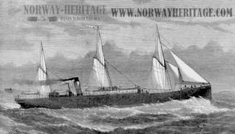
She was six years old when the family boarded. She was built in Hull for the Wilson Line and spent her whole working life on one route: Christiania, Christiansand, Hull, and back.
She carried sail as well as steam, on three masts, and made about 12 knots.
An iron hull with one propeller.
Less than half the size of the liner that probably took them across the Atlantic.
Built in Hull alongside the hull.
Emigrants travelled separately from these passengers.
Over 31 years on the same crossing.
First class had a dining saloon amidships in mahogany and crimson velvet, a drawing room with a Broadwood piano, a smoking room, and a separate saloon for women. The plan below shows those cabins.
Ole and his children travelled as emigrants, so they are not on this plan. The galley was split in two: one side cooked for first class and the other for the emigrants. Emigrants slept on two tiers of wooden shelves.

Her first call at Christiania was in August. She sailed back to Hull on 21 August with passengers, wood pulp and oats.
Captain Nicholson, who brought her on her first trip to Christiania, died that August.
RecordLine 38 of the police ledger. 550 kroner for the three of them.
She and the Argo left Christiania together with 889 emigrants between them.
She was towed off on 19 March and repaired while other ships covered the route.
She hit the Dutch ship Rijnstrom at anchor, sprang a leak and was beached. No one was hurt.
Her last emigrant sailing from Christiania.
Thirty-two years after she was launched.
The Angelo went only as far as Hull. From there a train took emigrants across England to Liverpool, where the large liners left for America. The family left Liverpool by way of Londonderry and landed at Quebec on 11 September.
LikelyThat fits the Allan Line's Sarmatian, which left Liverpool on 2 September 1880 and reached Quebec on 10 or 11 September. Another ship reached Quebec the same day, so this is not certain.
Lengths to scale
Launched on 7 March. Her first voyage was Liverpool to Quebec and Montreal that August.
She carried the 42nd Highland Regiment to the Gold Coast for the Ashanti War.
Liverpool to Quebec in 7 days, 9 hours and 45 minutes.
LikelyBy way of Londonderry. Probably the family's crossing.
She kept sailing for the Allan Line for another 18 years.
A Canadian record already has Ole landing at Quebec. The ship's own list for that arrival would name the ship. Library and Archives Canada holds the Quebec passenger lists for 1880.
Sources: Norway Heritage, for both ships' histories, voyage dates and the Angelo's deck plan (Trond Austheim's emigrant ship register). The Illustrated London News, 1874, for the engraving and the description of the Angelo's cabins. The Kristiania police emigrant register, August 1880, through Digitalarkivet, for the family's sailing and fare.
The Kristiania police register for August 1880. Choose what to look at and the page moves to it.
Norway's emigration law said every emigrant needed a written contract from a licensed shipping agent, and the contract was not valid until it had been shown to the police and signed there. The ledger is the police's record of those visits. Each name was written in as the emigrant came in with the agent to have the contract signed, usually a day or two before the ship left.
LikelyIn Kristiania that meant the main police station at Møllergata 19, on the market square called Youngstorget. It had opened in the 1860s, with a jail behind it. On 26 August 1880, Ole and the two children would have walked in from the street, about a kilometre up from the harbour, and left with the contract they carried all the way to America. The ship sailed the next day.
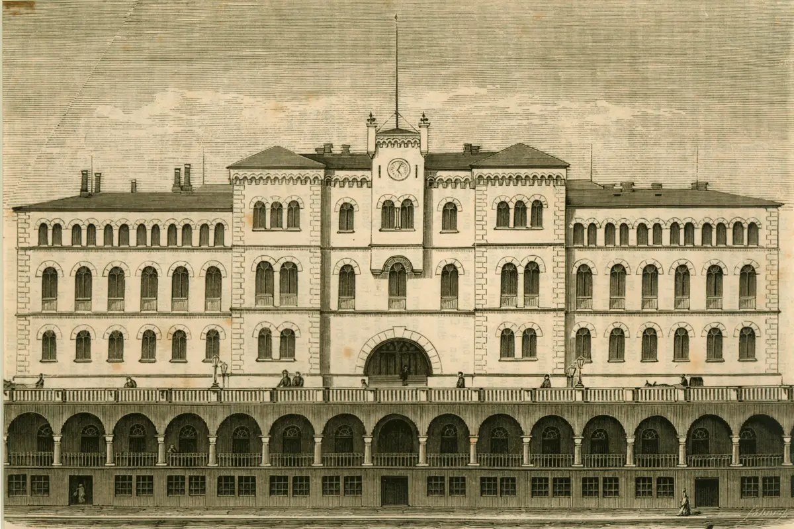
The building is still there. The jail behind it was torn down in the 1970s, but the front is protected and is now part of the government quarter in Oslo.
BackgroundEmigration contractsNorway Heritage, on how contracts were signed at the police officeOpen ↗ BackgroundMøllergata 19Store norske leksikon, on the police station built 1862 to 1866Open ↗ Museum recordYoungstorget med Møllergata 19, 1904Oslo Museum, OB.NW0434 · a photograph of the square and the stationOpen ↗The only photograph of anyone born in Nes. Move over a face to see who it is. Select one to open that person.


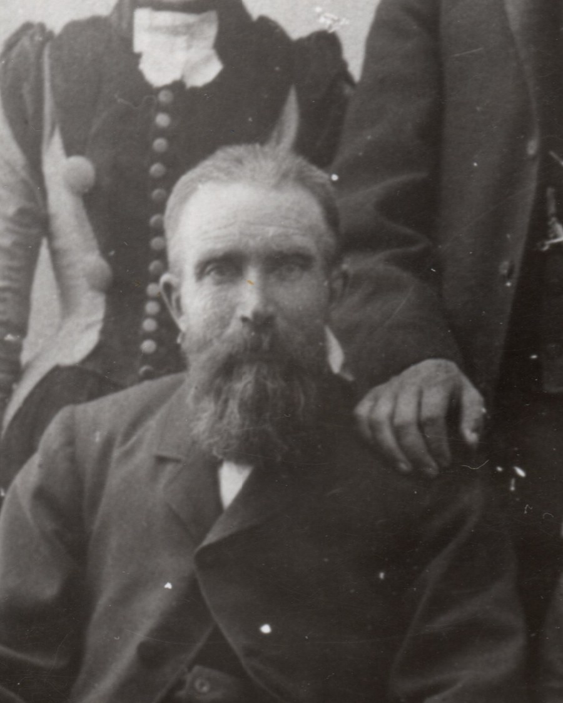

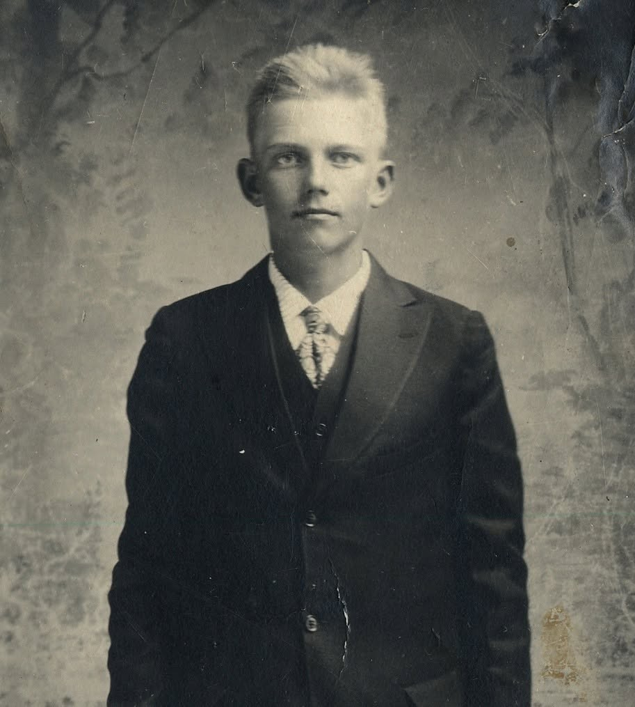
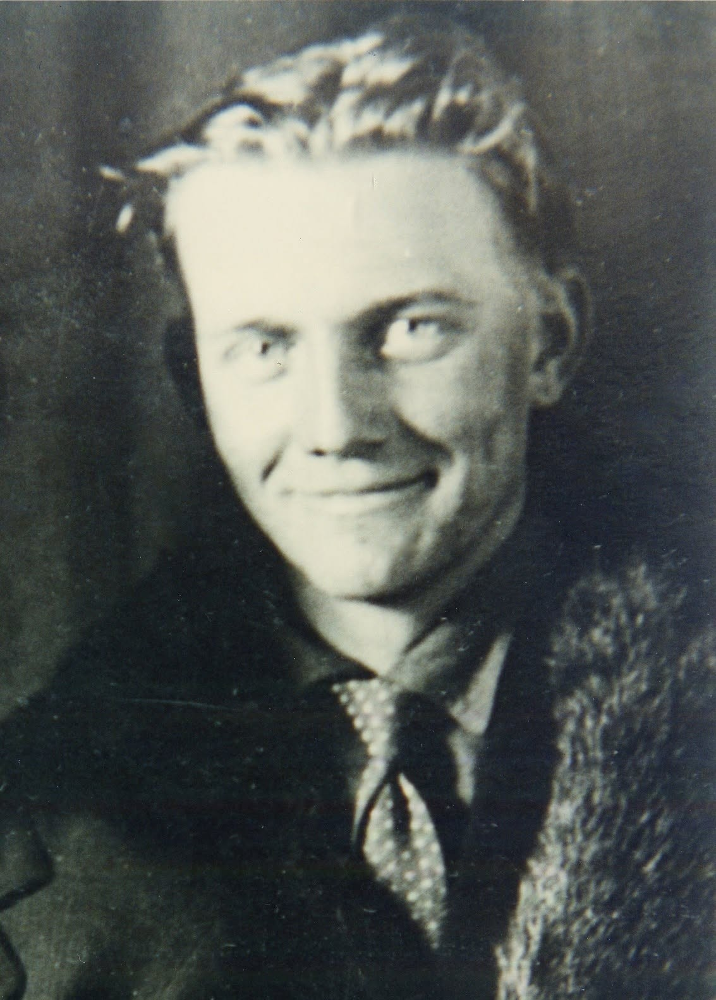

Ronald sits on the far right, in the hat and jacket, laughing.
Move over his face to see his name. The date is not known. From his age and the clothes, it is probably the 1940s.
Ronald and Clarissa Berget at home with their children. Ron Berget is the baby.
Move over a face to see who it is.
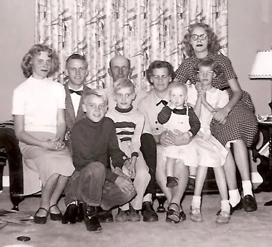


Ron Berget, at Crooked Lake in North Dakota, where he used to fish as a boy.
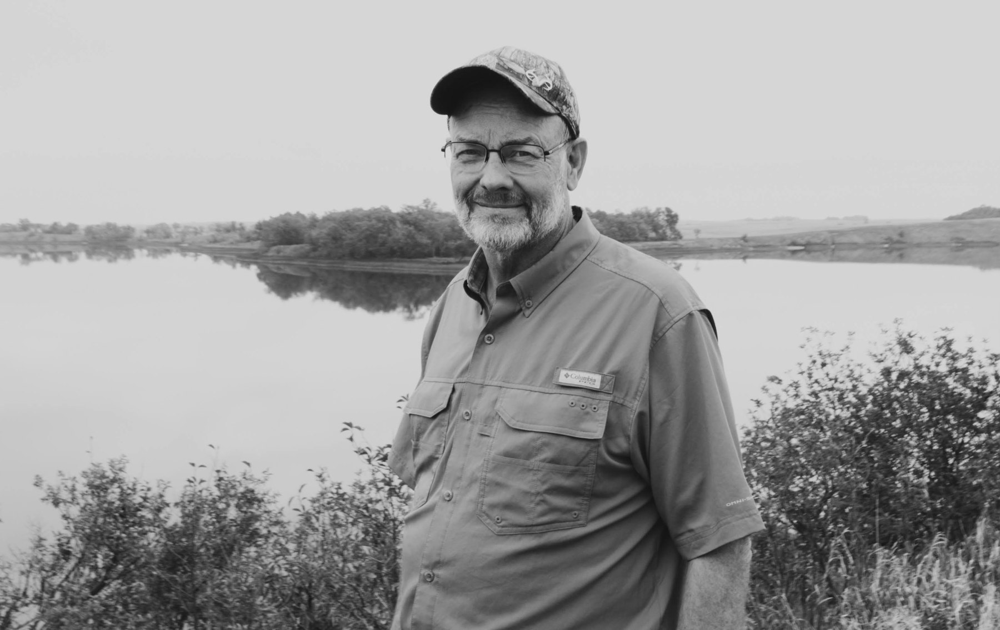
All four of Ron Berget's grandparents were born in Norway, and all four ended up at Turtle Lake. The Berget line is one of them.

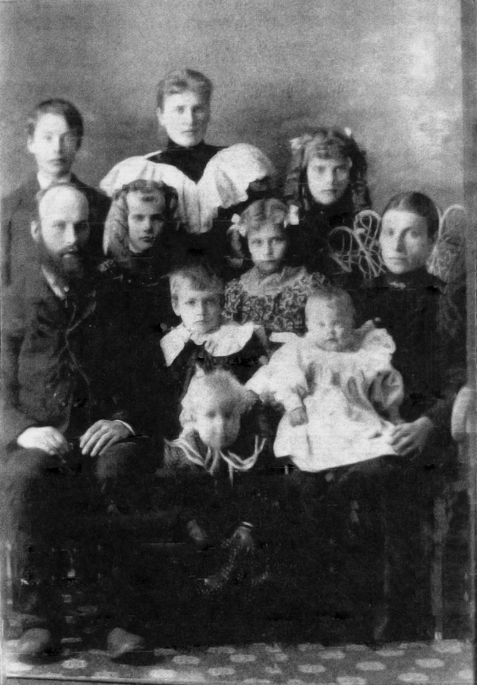
Six hundred years of one family, from a farm in Numedal to the prairie north of Turtle Lake. Orange is the family. Grey is what was happening around them.
Everyone in the family tree behind this site, from A to Z. Tap a name for dates and family. Where a person turns up on a page or in a story, the links take you there.
Ronald and Clarissa's children: Russ, Larry, Ron, Rosy and Mary Ann. Photographs of them are on Faces and More faces.
Most of what is on this site came from records. The best parts came from people. If you know a name, a nickname, a year or a story, please send it in, however small.
That is all it takes. No account, no form.
For example "Holsteins in the snow" or "the three men on the front step". Every photo on the site has a caption you can copy.
Who is in it, where it was, what was going on, what happened to the dog. Send a few at a time, whenever something comes to mind.
Eric will write it up. A story with no photo is welcome too. It can become a short story on the site.
If you remember something differently from someone else, send it anyway. Where the family disagrees, the site shows both versions and says who remembered what.
Why the family went to California, where they lived, and why they came back. Was Larry's "S" baseball uniform from Sacramento?
Who took you, what you caught, how you got there.
Who is who, which school it was, and roughly what year.
Anything at all: the animals' names, the machines, the buildings, who is standing where.
Anything you heard about the high kicker, the broom wagon, the tornado or life on the homestead near Turtle Lake.
His family tree and his write-up "The Berget Family Tree", which the whole site is built on. The names in the family photographs. Crooked Lake, and the church he went to as a kid. Whitey, his best friend growing up; Canonball, the horse in the straw hat, named for the round spot on his rump; and the snow banks of the March 1966 blizzard, which went right over the outbuildings.
Your name goes here next.
The people around the direct line: the families who married in, and the generations closest to now.
Clarissa Berget was born a Fylling. Her father, Olaf, was born in 1884 near Ålesund.
Ronald and Clarissa raised eight children: Rueben, Charles, Larry, Russell and Ron, and Corrine, Roselyn (Rosy) and Mary Ann. Another son, Donald, died as a baby.
Ron was born in 1954. Going up from him, the next brothers are Russ and then Larry.
The children's names are from two obituaries: Clarissa Berget, 2000 and Charles O. Berget, 2018.
When Ole was born in 1839, "Nes" did not mean a village. It meant a whole stretch of the Hallingdal valley, with one parish, one main church and about four thousand people.
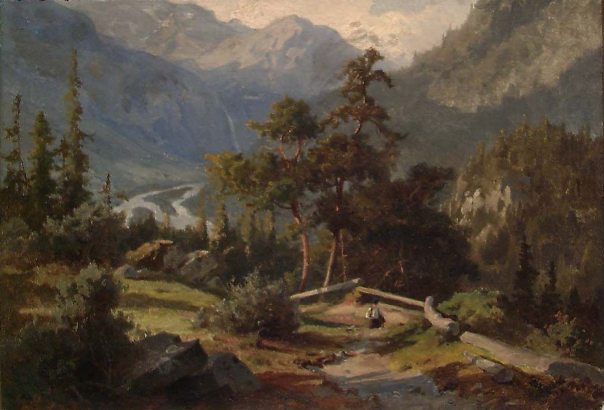
There are three sizes of Nes, and the family lived in the biggest one.
The church, the courthouse and a cluster of houses where the Rukkedøla runs into the Hallingdal river. "Nes" means a point of land. Today about 2,100 people live there.
The valley from Svenkerud in the north to Bergheim in the south, with forest and mountains on both sides. Five times the size of Minneapolis, with four people per square kilometre.
Flå was part of Nes until 1905, when it split off and took 41 percent of the land. Before that, the parish ran about 30 miles further down the valley. Our size is worked out from that split.
The whole of Nes, Flå included, from the census counts. It grew while Ole was young, peaked when he was 26, and then started to empty out. Ole's own family was part of that.
ImaginedNo one wrote down a day in Ole's life. This walk is built from the terrain and the records, not from a diary.
Ole steps out on the hillside in Lie, across the river from the village. Below him the valley floor is still in shadow. Behind the farm the slope keeps climbing to a rounded top, 170 metres higher.
The steepest part of the walk. The Hallingdal river is wide and cold here. In winter it was frozen hard enough to use as a road.
The great flood of 1860 took every wooden bridge in Buskerud, so for a while there may have been none. In the village: the church, the courthouse, and the mills along the Rukkedøla.
Most of the parish came here for baptisms, weddings and burials. Flå, further down the valley, had its own church.
The hard part. With a baby to be baptised, or a sack of flour from the mill, it took longer.
Above the farms, the forest gives way to open mountain. The highest point in Nes is Hallingnatten. Summers in Hallingdal meant taking the animals up to the high pastures.
Population: Statistics Norway, 1960 census booklet for Flå, which lists Nes herred as a whole for 1801 to 1900. The 1839 area is our estimate from today's area and Flå's share. Walking times are from the terrain model on The rock page.
Keep goingNes and Hallingdal in art →Paintings and drawings of the valley from Ole's timeFrom 1843 to 1852 the district judge of Hallingdal lived at Olsgard in Nes. His eldest son was the painter Hans Gude, who came home from Düsseldorf in the summers and painted the valley. Other artists passed through in the same years. Ole Berget was a boy in Nes the whole time.
Works made in Nes, or of it.

A study of the mountains and clouds, painted in Nes.
Oil on paper, 19 × 42 cm · Nasjonalmuseet →
The stave church where the family was baptised. It was taken down when the new church was built.
Watercolour · The church →
Ole was eight that summer.
Oil on cardboard, 29 × 22 cm · Nasjonalmuseet →
The museum records it as painted at Nes.
Oil on canvas, 24.5 × 35 cm · Nasjonalmuseet →
On the Rukkedøla, the river that comes down into Nes.
Pencil and watercolour, 13.6 × 12.2 cm · Nasjonalmuseet →
How people in Nes dressed a generation before Ole. Flå, down the valley, is where the family line starts.
Pen and watercolour, 16.9 × 23.4 cm · Nasjonalmuseet →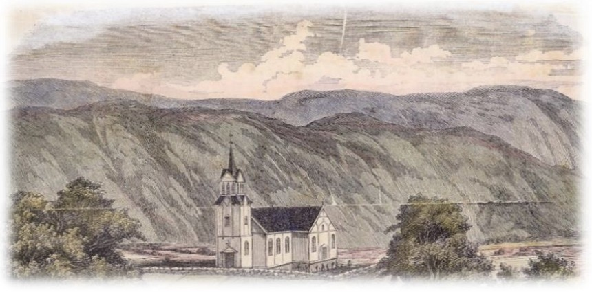
The white church that replaced the stave church in 1862.
Hand-coloured print · The church →Hallingdal above and below Nes.
Painted in the years he spent his summers in Nes.
Oil

Dahl came through the valley on 23 August 1844, sketching with his children and the painter Peder Balke.
Oil on canvas, 24.1 × 36.5 cm · The Met →

Its older title is “River in flood with drift timber across the road”.
Pencil and black chalk, 17.3 × 21.5 cm · Nasjonalmuseet →Adolph Tidemand painted the people of the valley and the insides of their houses.


Gulsvik is in Flå, at the foot of the valley.
Oil on canvas, 31.5 × 43.5 cm · Nasjonalmuseet →
The artists all died before 1940 and their works are out of copyright. Pictures marked Nasjonalmuseet and The Met are shown from those museums' own image servers, with the photographer credited in the enlarged view. Follow the link under each one for the museum's record. Gude's years in Nes are from Glimt fra Nes historie, Nes historielag, 2018.
North of Turtle Lake, North Dakota. Christ and Margith were there by 1910, and Ronald farmed it until 1971. Pick up a print to see it larger.
Tiny tales from the tree.
Where the Berget name comes from.
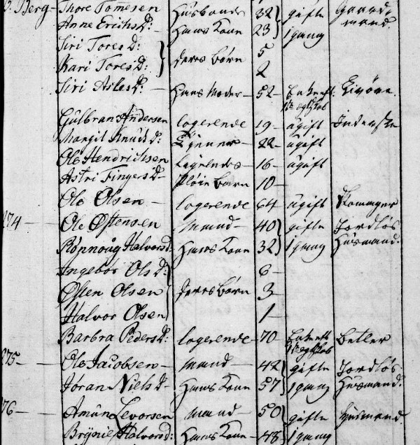
BergAmun LevorsenOn 1 February 1801 the census taker in Nes wrote Berg beside a farm and listed everyone living on it. Near the bottom is entry 276: Amun Levorsen, 50, husmann, with his wife Brynil.
The spelling Berget appears 38 years later, in the church book entry for Ole's birth in 1839.
Until the late 1800s most rural Norwegians had no family name. A man had a first name, his father's name with -sen on the end, and the name of the farm he lived on. Ole Amundsen Berget meant Ole, son of Amund, who lives at Berget.
The farm part worked like an address. If you moved, it changed. Norway only made fixed family names compulsory in the 1920s.
His marriage entry in Nes church. No Berg anywhere on it.
The census. He is a husmann at Berg, a cottager on a farm someone else runs. This is the only record we hold that puts the family at a place called Berg.
The baptism of his son Amund. If the address rule held, people would have called him after Høvde or Engen at this point, not Berg.
The Nes church book, entry 39. This is the earliest record we hold with the spelling Berget. A witness on the same entry appears to be a Kari Berget. Both are our reading of the handwriting.
The census. Ole, 26, owns it. It is holding 130c in the land register. Its neighbours in the list are Lie, Braaten and Bjørnebraaten. A second small holding next door is also called Berget.
The police emigrant ledger. This is the earliest record we hold where Berget is written as part of his name.
The family database has Nellie and Amund as Berg, and the family portrait came down labelled “Berg family”. Christ kept Berget, and it has been Berget since.

Hallingdal Museum has a photograph of an old pack-horse and cart road on the slope below Berget and Aspelund, in Liagardane in Nes. Two men, Edvin P. Hovde and Ola H. Liodden, are out walking it. The date is not given.
The place names fit this page. Liagardane means the Lie farms, and Berget sits among them. Amun's wife Brynnild came from Lieodden, and the family lived at the Høvde cottage in 1811.

Background: Nesbyen and the hills above it, 1910
The old stave church at Nes in Hallingdal. The family's oldest records from Nes were written for events inside it. It was pulled down in 1864.
See the painting at Hallingdal Museum on Google Arts & Culture
Hans Gude was born in Christiania in 1825 and died in Berlin in 1903. He became one of Norway's best-known landscape painters. Three years after this watercolour, he and Adolph Tidemand painted Bridal Procession on the Hardangerfjord.
He was in Nes because of his father. Ove Gude was the district judge there from 1843 to 1852, and Hans came often. In June 1845 he was 20 and a student in Düsseldorf. The watercolour is 19 by 25 cm, smaller than a sheet of printer paper.
He came back in 1850 and measured the building. The architect Georg Bull measured it again in 1855. Those two sets of drawings are why so much is known about a church that no longer exists.
The watercolour was given to G. Tandberg, who founded Hallingdal Museum in Nesbyen. It is still there.
Three family events are recorded in the Nes church book while the stave church stood: a wedding in 1788, a baptism in 1811 and Ole's birth entry in 1839. The other births in Nes in those years have no entry we have read yet. Baptisms here are likely, and they are marked that way.
The church stood for about 590 years · orange: 1788 to 1864, the family's records here · white mark: Gude's painting
A sign at the site dates it to the 1200s. Burned foundations under it show at least one earlier church stood on the same spot.
The church began as one long room. The additions of the later 1700s gave it the shape in the painting.
RecordThe marriage entry in the church book. It is the earliest family event we can place in this building.
LikelyHe is 13 at Berg in the 1801 census. We do not hold his baptism entry.
RecordThe baptism entry in the church book. His parents were living at the Høvde cottage.
LikelyOle's future wife. Ron Berget's tree has an 1829 register page filed as her birth record. We have not picked out her line on it yet.
RecordThe emigrant. Entry 39 in the Nes church book gives his parents as Amund Halvorsen Berget and Birgit Olsdatter. The entry is pictured below.
Ole is five. His father Amund is 34.
The stave church had become too small and was in poor repair. The font and the altarpiece were carried over to the new building.
Two years after the new church opened.
LikelyAll four were born after the old church was gone. They were most likely baptised in the new one, at the old font.
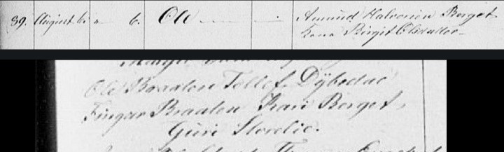

Generations 1 to 5 farmed Kvie in Flå, about 30 km down the valley. Flå had its own stave church, pulled down in 1859. Their baptisms were more likely there than here.
We have not checked which building each entry means. The Nes church book may also cover the smaller churches in the parish. The 1788 and 1811 entries need a second look for that.
We do not know where Ole and Birgit married. Their first child was born in December 1865. If the wedding was before 1862, it was in the stave church.
The stave church was in such poor shape that it would have needed major repairs. The council decided to build a new church instead. The job went to Georg Andreas Bull, the same architect who had measured the old church in 1855. He was the brother of the violinist Ole Bull and had designed the East and West railway stations in Christiania (Oslo).
Work began in 1859. For a small, poor parish it was a huge effort. The church came out bigger than the one built in Hønefoss at about the same time, and people started calling it Hallingdomen, the Hallingdal cathedral. It is still the church in Nesbyen today.
LikelyOle was 22 when it opened. He and Birgit would have known both buildings. Their four children were most likely baptised here, over the old soapstone font.
Local historyNes historielag booklet: “Nes kirke”On the new church, its architect and the name HallingdomenOpen ↗The family kept going to church after they crossed. This is the white frame church in North Dakota where Ron Berget went as a kid, photographed recently.
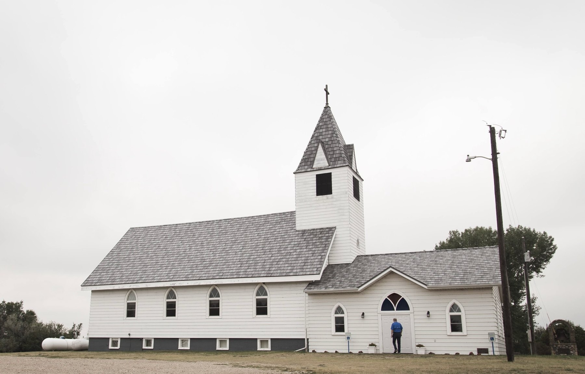
Corrections can go straight to Eric.
Sources: Hallingdal Museum, through Google Arts & Culture, for the painting, its date, size and history. The Norwegian Wikipedia article Nes stavkirke (Hallingdal) for the building, the measurements, the 1965 excavation and what survives. Lokalhistoriewiki for the date of about 1275 and for Flå. Hallingdal Reiseliv, through Visit Norway, for Ove Gude's years in Nes and the 1862 church. Family dates are from the family database.
Berget means the rock. This is the real ground around the farm, built from Norway's terrain survey. Somewhere in it is the rock the family is named for.
Drag to turn · pinch, scroll or use the buttons to zoom · heights are true to scale · on the survey map, dark lines every 50 m and every 10 m near the farm
A steep face 350 m north of the yard. It is about 80 m high and as steep as 48°.
For: the farm under it is called Skriu, a Norwegian word for scree. Scree comes off a rock face.
Against: it stands over Skriu, not over Berget.
The slope behind the farm ends in a rounded top at 677 m. It is 400 m east of the yard and 170 m above it.
For: it is straight uphill from the door.
Against: it has no name on the map.
The only named height nearby, 700 m to the south-west. Its map point is at 436 m, lower than the yard.
For: someone thought it worth a name.
Against: it already has that name, and it is nearer the Storeli farms.
The name may describe the farm's own ground: a house built on bare rock. The slope near the farm point is as steep as 30°.
For: it is the simplest reading of the name.
Against: the model cannot show bare rock. Someone has to stand there.
The farm sits about 1,130 feet above the old church site, 3.8 miles away as the crow flies. These times are worked out from the terrain survey, using a standard hiking-speed rule along the easiest slopes. The old paths would have wound more, so read them as the shortest likely.
Downhill most of the way. With small children, or carrying a baby to be baptised, closer to two hours.
The way home was the hard part, uphill the whole time.
GuessA horse at a walk covers about 4 miles an hour on easy ground, slower on steep slopes. A cart or a winter sleigh would be about the same, where the track allowed one.
The nearest stretch of the Hallingdal river, south-west of the farm. About an hour back up.
The farm and the church are on opposite sides of the valley. Nesbyen sits on the point where the Rukkedøla joins the Hallingdal river, and Berget is across the main river from it. So the way to church very likely crossed the Hallingdal river. Likely
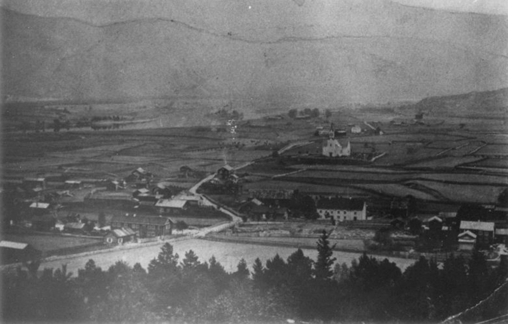
The steel bridge at Nesbyen was not built until 1909, 29 years after Ole left. Before it, there was an older wooden bridge with one pier in the middle of the river, still standing in the photograph above, taken about ten years after Ole left.
Two more details from the same booklet. The great flood of 1860 took every wooden bridge in Buskerud, so for a time there may have been no bridge at all. And in winter the frozen river was used as a road.
SourceGlimt fra Nes historie (Glimpses of Nes history)Nes historielag, the local history society. See "Nesbyen, tre fotografier" and the 1860 floodOpen ↗ Museum recordNes bru i Hallingdal, oppført 1909 (Nes bridge, built 1909)Norsk vegmuseum, the Norwegian Road MuseumOpen ↗Corrections can go straight to Eric.
The farm history. Terje Østro's Gards- og Slektshistorie for Nes i Hallingdal has a volume for the Berg and Lie quarter. Its list of farms includes Berget. It should say who lived there and what the name refers to.
The land register. The 1865 census calls the family's farm holding 130c. No record yet ties that number to the Berget on today's map. The witnesses' names are the only link so far.
The museum's photographs. Hallingdal Museum has a photograph of the old road below Berget in Liagardane, and about 17,000 more from Nes online. Someone there may know which rock the name means. See the road photograph.
A visit. Stand in the yard, look uphill, and ask the neighbours what they call it.
Terrain: the Norwegian Mapping Authority's elevation survey, read from the open Terrain Tiles set (Kartverket, CC BY 4.0), with spot heights checked against Kartverket's elevation service. Satellite picture: Sentinel-2 cloudless 2021 by EOX IT Services GmbH, s2maps.eu (contains modified Copernicus Sentinel data 2021, CC BY-NC-SA 4.0); it shows the land today, not in 1839. Place names and positions: Kartverket's place-name register. The stave church position is 500 m north-west of today's church, placed by us. The straight line to the church is not a route. The reading of the 1839 entry and of the name Skriu is ours.
Rooms with the lights off. Each is a question someone in the family could close.